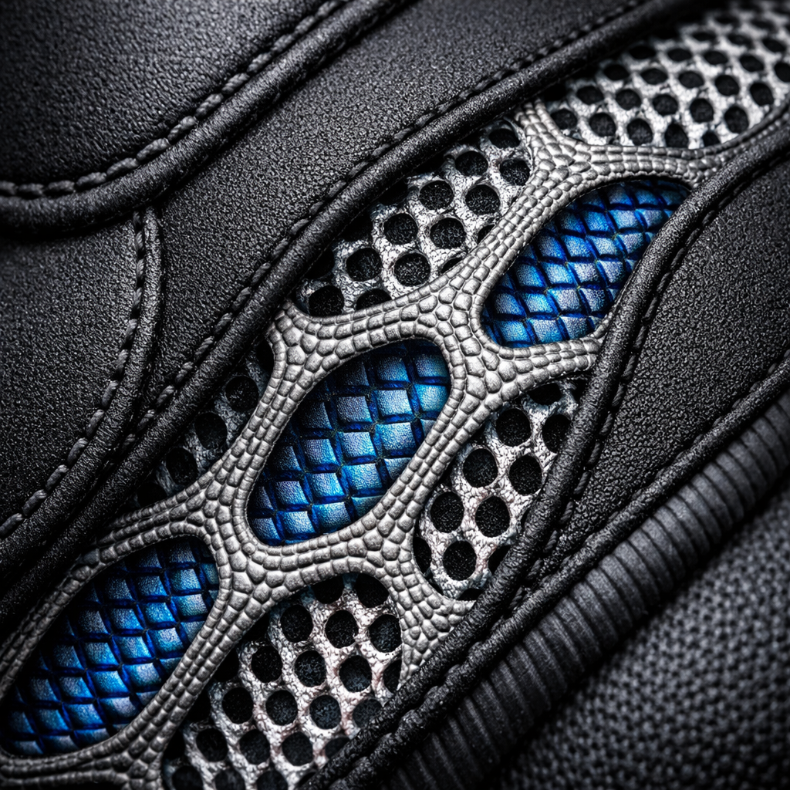
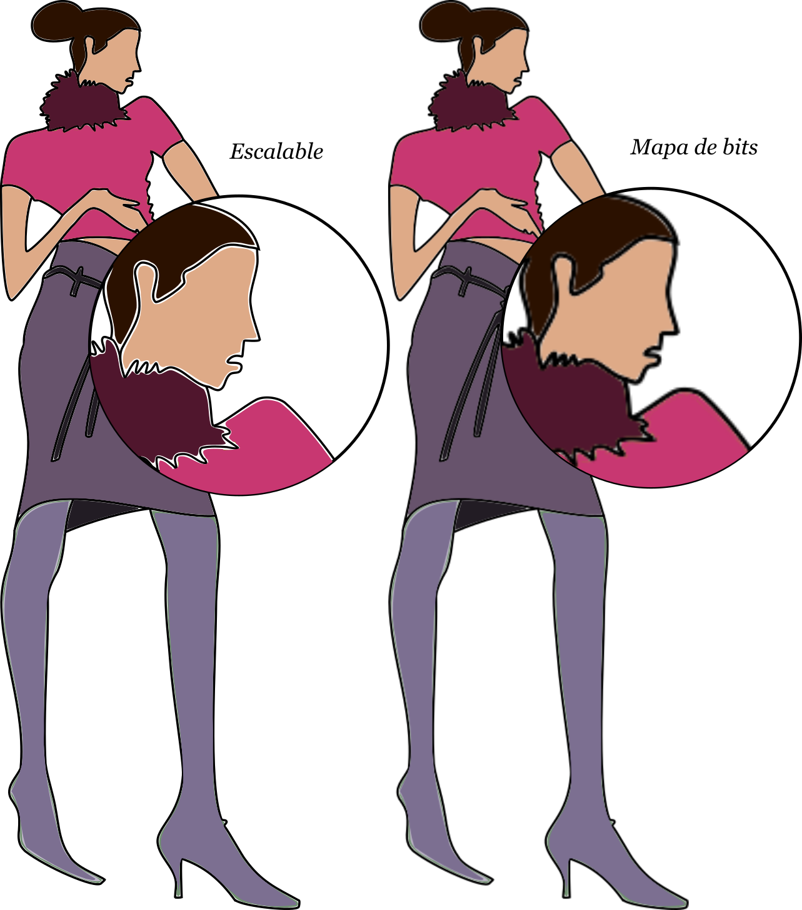
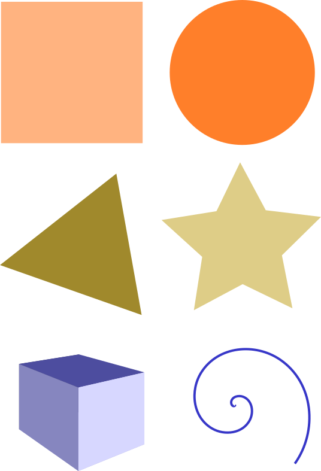
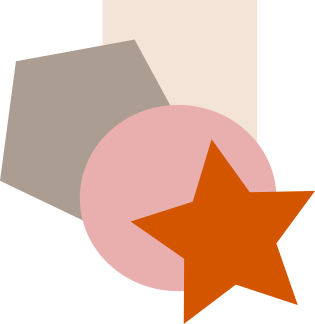

Módulo 2: Dibujo vectorial 2D: el figurín
Objeto de Aprendizaje Interactivo para el Diseño de Indumentaria
1. La IA como Motor Creativo
El proceso no comienza en el software, sino en la idea. Usamos el Prompting Estratégico para explorar texturas y morfologías.
"Macro fotografía de neopreno reciclado con inserciones de malla 3D, estilo futurista, calidad 4K, tamaño 1080x1080 px"
Punto Clave:
- La IA genera referencias visuales (Moodboards inteligentes).
- El diseñador selecciona y analiza técnicamente la imagen obtenida.
- Se busca el "Flat Sketch" como guía para el vector.

2. Vectores: El ADN Industrial
Píxeles. Se pixela al ampliar. Ideal para fotos y texturas complejas generadas por IA.
Fórmulas matemáticas (Nodos). Escalabilidad infinita. Ideal para moldería y corte láser.
Convertir un mapa de bits en vector es el paso crítico para que el diseño sea reproducible industrialmente.

3. Construir, no solo dibujar
En Inkscape, usamos Formas Básicas para construir la arquitectura de la prenda.

4. Eficiencia y Orden-Z
La organización de los objetos determina la calidad de la ficha técnica.
Orden de Apilado (Z)
Teclas INICIO/FIN: Traer al frente o enviar al fondo. Esencial para colocar bolsillos sobre el cuerpo de la prenda.
Alinear y Distribuir (Ctrl+Shift+A)
Garantiza que los botones o pespuntes tengan una separación industrial exacta.

🚀 Desafío de Integración
¿Estás listo para convertir tu idea en un activo digital?
- 1. Conceptualiza: Genera un detalle constructivo con IA.
- 2. Capas: Importa la imagen a Inkscape en una capa al 50% de opacidad.
- 3. Calco: Usa la Pluma Bézier para trazar los contornos.
- 4. Limpieza: Simplifica los nodos (Ctrl+L) para un acabado profesional.